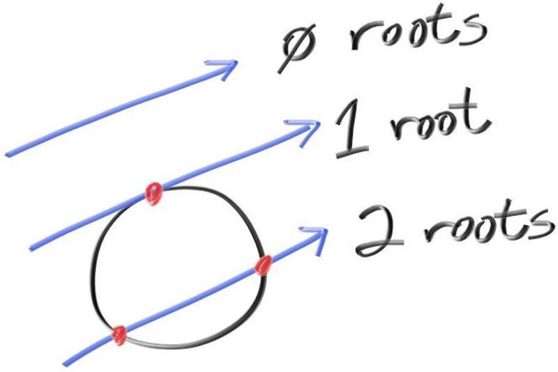

Ray-Sphere Intersection
The equation for a sphere of radius \( r \) that is centered at the origin is an important mathematical equation:
\[ x^2 + y^2 + z^2 = r^2 \]
You can also think of this as saying that if a given point \( (x, y, z) \) is on the surface of the sphere, then \( x^2 + y^2 + z^2 = r^2 \). If a given point \( (x, y, z) \) is inside the sphere, then \( x^2 + y^2 + z^2 < r^2 \), and if a given point \( (x, y, z) \) is outside the sphere, then \( x^2 + y^2 + z^2 > r^2 \).
If we want to allow the sphere center to be at an arbitrary point \( (C_x, C_y, C_z) \), then the equation becomes a lot less nice:
\[ (C_x - x)^2 + (C_y - y)^2 + (C_z - z)^2 = r^2 \]
In graphics, you almost always want your formulas to be in terms of vectors so that all the \( x/y/z \) stuff can be simply represented using a vec3 class. You might note that the vector from point \( \mathbf{P} = (x, y, z) \) to center \( \mathbf{C} = (C_x, C_y, C_z) \) is \( (\mathbf{C} - \mathbf{P}) \).
If we use the definition of the dot product:
\[ (\mathbf{C} - \mathbf{P}) \cdot (\mathbf{C} - \mathbf{P}) = (C_x - x)^2 + (C_y - y)^2 + (C_z - z)^2 \] Then we can rewrite the equation of the sphere in vector form as:
\[ (\mathbf{C} - \mathbf{P}) \cdot (\mathbf{C} - \mathbf{P}) = r^2 \]
We can read this as “any point \( \mathbf{P} \) that satisfies this equation is on the sphere”. We want to know if our ray \( \mathbf{P}(t) = \mathbf{Q} + t \mathbf{d} \) ever hits the sphere anywhere. If it does hit the sphere, there is some \( t \) for which \( \mathbf{P}(t) \) satisfies the sphere equation. So we are looking for any \( t \) where this is true:
\[ (\mathbf{C} - \mathbf{P}(t)) \cdot (\mathbf{C} - \mathbf{P}(t)) = r^2 \]
which can be found by replacing \( \mathbf{P}(t) \) with its expanded form:
\[ (\mathbf{C} - (\mathbf{Q} + t \mathbf{d})) \cdot (\mathbf{C} - (\mathbf{Q} + t \mathbf{d})) = r^2 \]
We have three vectors on the left dotted by three vectors on the right. If we solved for the full dot product we would get nine vectors. You can definitely go through and write everything out, but we don't need to work that hard. If you remember, we want to solve for \( t \), so we'll separate the terms based on whether there is a \( t \) or not:
\[ (-t \mathbf{d} + (\mathbf{C} - \mathbf{Q})) \cdot (-t \mathbf{d} + (\mathbf{C} - \mathbf{Q})) = r^2 \]
And now we follow the rules of vector algebra to distribute the dot product:
\[ t^2 \mathbf{d} \cdot \mathbf{d} - 2 t \mathbf{d} \cdot (\mathbf{C} - \mathbf{Q}) + (\mathbf{C} - \mathbf{Q}) \cdot (\mathbf{C} - \mathbf{Q}) = r^2 \]
Move the square of the radius over to the left hand side:
\[ t^2 \mathbf{d} \cdot \mathbf{d} - 2 t \mathbf{d} \cdot (\mathbf{C} - \mathbf{Q}) + (\mathbf{C} - \mathbf{Q}) \cdot (\mathbf{C} - \mathbf{Q}) - r^2 = 0 \]
It's hard to make out what exactly this equation is, but the vectors and \( r \) in that equation are all constant and known. Furthermore, the only vectors that we have are reduced to scalars by dot product. The only unknown is \( t \), and we have a \( t^2 \), which means that this equation is quadratic. You can solve for a quadratic equation \( ax^2 + bx + c = 0 \) by using the quadratic formula:
\[ \frac{-b \pm \sqrt{b^2 - 4ac}}{2a} \]
So solving for \( t \) in the ray-sphere intersection equation gives us these values for \( a \), \( b \), and \( c \):
\[ a = \mathbf{d} \cdot \mathbf{d} \] \[ b = -2 \mathbf{d} \cdot (\mathbf{C} - \mathbf{Q}) \] \[ c = (\mathbf{C} - \mathbf{Q}) \cdot (\mathbf{C} - \mathbf{Q}) - r^2 \]
Using all of the above you can solve for \( t \), but there is a square root part that can be either positive (meaning two real solutions), negative (meaning no real solutions), or zero (meaning one real solution). In graphics, the algebra almost always relates very directly to the geometry. What we have is:
 Figure 5: Ray-sphere intersection results